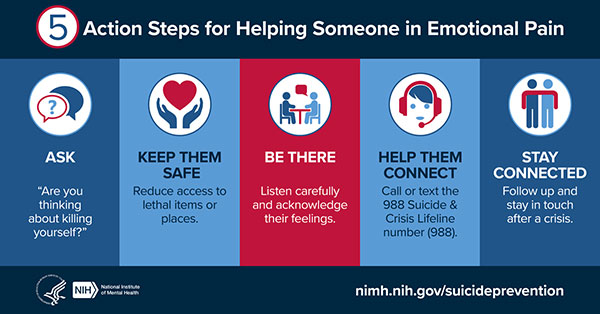

If you or someone you know is in a crisis, please don't hesitate to reach either of following resources:
988 or 800-273-8255Mental Health in Youth Minority Groups
Since 2017, suicide has been the second leading cause of death in those 10-19 years old. –AACAP
Adolecence and young adults are some of the most aflicted with mental health issues. As these are the people of the future, it's important to help them seek guidance towards a healthy way of living. Young people part of marignalised communites, like the LGBTQ+ and racial identies, are even more at risk having mental health issues. If you know someone might need help, do not hesitate to reach out. Below are differnent statisitics for BIPOC and LGBTQ+ youth and ways to reach out.
Statistics on Mental Health in Youth Minority Groups
Black transgender and nonbinary young people report disproportionate rates of suicide risk—
with 58% seriously considering suicide and 1 in 4 (25%) attempting suicide in the past
year.
–Trevor Project
- LGBTQ+ youth are 4x more likely to attempt suicide than their peers.
- The Trevor Project's 2023 survey found that 41% of LGBTQ+ youth have seriously considered suicide, about half were trans and nonbinary.
- The Trevor Poject's analysis of CDC data found:
- 48% of Bi people considered while 27% attempted.
- 37% of Lesbian/Gay people considered while 19% attempted.
- 14% of Straight people considered while 6% attempted.
- 2020 peer-reviewed study found that trans and non-binary youth were 2 to 2.5 times more likely to experience serious contemplation of suicide compared to cisgender LGBQ+ peers.
- A 2023 survey found that almost all LGBTQ+ youth that had BIPOC identities reported higher suicide attempt rates than their peers.
- Indigenous youth who are two spirit/LGBTQ+ consistently report the hiest suicide risk rate.
- Some Risk factors for suicide in LGBTQ+ youth:
- Minority Stress: where anti-LGBTQ+ messages become internalized.
- Examples include experiencing the following due to identity: Housing instabilities, physical harm, identity change attempts by parents via conversation camps and the like.
- Some preventive factors for LGBTQ+ youth suicide:
- Identity-affirming spaces like homes and schools consistently lower suicide attempt rates for LGBTQ+ youth.
- Trusted adults and supportive peers have led to reports of higher self-esteem in LGBTQ+ youth.
- An article on Pew Trust gives 3 strategies for combating the fact that from 2007 to 2020 the suicide rate for black youth has risen 144%.
- The 3 stratigies:
- Increase healthcare providers' understanding of the cultures they provide care to.
- Research risk factors focusing on different minority identities.
- Research shows that black youth show symptoms of depression (a suicide risk factor) differently than white peers.
- Aggression and irritability present more for depression than sadness and a lack of interest in things.
- All relates to distrust of healthcare professionals due to centuries of exploration and abuse.
- Diagnostic criteria being created primarily around white people leads to misclassification and inappropriate medical responses, increasing someone's suicide risk.
- Black youth are often misdiagnosed when they experience suicidal tendencies.
- Still, less than 50% of youth go on outpatient after being in the ER for self-harm, and it's less for Black youth.
- Due to a 2019 report to Congress, funding for the study of suicide risk and preventive factors, like stigma and connectedness of communities, has increased.
Points on the statistics on black youth and 3 strategies to counter suicide rates rising in the black youth populous can apply to other races too. One of the reasons Two-Spirit Indigenous youth might be facing the highest suicide risk rates is because of the intersections of minority stress they face and the lack of specific research into their situation.
Test your Knowlege on the Statistics!
The image above is working as the wireframe image(s) for this section. The plan was to make this into a short javascript quiz. Though... Yeah...
This would've stayed blank until I was able to work out the javascript for the quiz, but I unfortunately did not have enough time to add the quiz to this project during my time with CodePath. Hopefully in the near future, I'll have an afternoon or so to code this bad boy up.
For now, I humbly request that you take this Google Forms survey in the meantime, if you desperately want to take a quiz. I was using it as my "wireframe" for the JavaScript I will eventually make, but... We'll say, my time was stolen.
Commit to helping a loved one!
Mental Illness is sometimes called and an invisible affliction, but even though you can't see it, it doesn't mean you can't help. A supportive community is a key factor in preventing suicide, and you have the power to be a pillar of support. Reaching out shows the sufferer that they're not alone and that they don't have to be going through it alone. Even if you don't personally know anyone who's presenting any risk factors, it doesn't hurt to reach out to someone and let them know you're there for them. Whether it be a younger cousin, a niece or nephew, or a peer, you have the power to make a difference in their life by just reassuring them.
Sign the petition below to let the world know you're comitted to caring about the the mental heath our youth.
Submitted signatures:
Total signatures: 0